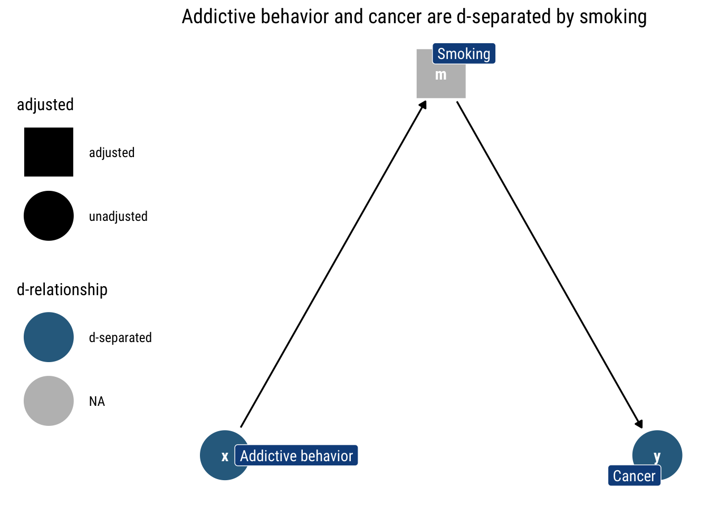

Motivation
Stats people know that correlation coefficients do not imply causal effects. Yet, very often, partial correlation coefficients from regressions with an ever growing set of ‘control variables’ are unequivocally interpreted as a step in the right direction toward estimating a causal effect. This mistaken intuition was aptly named by Richard McElreath, in his fantastic Stats course, as Causal Salad: people toss a bunch of control variables and hope to get a casual effect out of it.
In his fantastic course, Richard offers a clear and intuitive antidote for the Causal Salad: Graph Models for Causality. In these series of blogposts, I’ll explore the work of Judea Pearl, the father of the Graphical approach toward Causality. In particular, I’ll share what I learn from his book Causality: Models, Reasoning and Inference
In this blogpost, I’ll explore Bayesian Networks: the simplest of probability networks to represent a joint distribution and how we can derive testable implications from them using the d-separation criterion. Thorough the blopost, I’ll be using the excellent packages dagitty and ggdag.
Bayesian Networks
Joint probability distributions are tricky objects to represent: both in our heads and in our computers. They can imply an unworldly number of relationships. Probability theory gives us in the chain rule of probability a tool to decompose a joint probability distribution.
Suppose we have a distribution ( P ) defined on ( n ) discrete variables, which we may order arbitrarily as ( X_{1}, X_{2}, , X_{n} . ) The chain rule of probability calculus always permits us to decompose ( P ) as a product of ( n ) conditional distributions:
\[ P\left(x_{1}, \ldots, x_{n}\right)=\prod_{j} P\left(x_{j} \mid x_{1}, \ldots, x_{j-1}\right) \]
Given structural knowledge about the problem at hand, we can simplify this decomposition given the conditional independence we posit in our model of the joint distribution. That is, it is not always necessary to condition on all the other variables: it suffices to control in a minimal set of variables to render other predecessor variables independent. For a given variable \(x_j\) let’s name this set of variables \(pa_j\): the parents of the variable \(x_j\).
We can then start constructing a graph (a Bayesian Network): each node will be a random variable; for any node, the arrows that enter into it represent the fact that conditional on its parents, the variable is conditionally independent of all other preceding variables. That is, at the \(j\)th stage of construction, we only draw an incoming arrow into \(x_j\) from its parents; conditional on its parents, all other predecessors are independent. Therefore, a missing arrow between any two nodes means that they are independent, once we know the values of their parents.
An example
Let’s say we’re looking at the relationship between smoking and cardiac arrest. We might assume that smoking causes changes in cholesterol, which causes cardiac arrest. We start assuming that unhealthy lifestyle is the only ‘Parent’ for both smoking and weight:
Then, we assume that the ‘Parents’ of cholesterol are Smoking and Weight:
Finally, we assume that Cholesterol is the only ‘Parent’ of Cardiac Arrest
Therefore, the arrows, by specifying what are the conditional independencies that hold in our model, tell us that what is the recursive decomposition of the joint probability distribution implied by the model. In this case, thus:
\[ P\left(x_{1}, x_2, x_3, x_4, x_{5}\right) = p(x_1) p(x_2 | x_1) p (x_3 | x_1) p(x_4| x_2, x_3) p (x_5 | x_4) \]
Probability connections: Markov Compatibility
Whenever a joint probability distribution \(P\) admits the decomposition posited by our graphical model \(G\), we say that \(P\) is Markov Relative to \(G\). That is, it means that \(G\) can explain the generation of the data represented by \(P\).
Once we know the probabilistic connection between our Graph and a probability distribution, we may be interested in deriving the testable implications of our graphical model \(G\). What other conditions does it imply about the probability distribution P?
In particular, in deriving which variables are independent and dependent, both marginally and conditional on other variables. Thanks to our graphical representation, we can derive an algorithm that returns all implied independencies that the model expects that will hold in the data: the d-separation criterion.
d-separation: blocking the information flows
Deriving testable implications from our assumptions is not as easy as it looks. Take the following example:
Can we make \(X\) and \(Y\) conditionally dependent? The answer is not evident. To answer this question, we must understand how the statistical information moves through our graph.
Open paths
In our Graph \(G\), the information moves across variables regardless of the direction of the arrows. If there is an open path between \(X\) and \(Y\), then, the information will flow and thus make the two variables dependent. The question, then, is what is an open path? The d-criterion answers precisely this question:
( A ) path ( p ) is said to be blocked (or ( d ) -separated) by a set of nodes ( Z ) if and only if any of the following conditions hold:
if ( p ) contains a chain ( i m j ) or a fork ( i m j ) such that the middle node ( m ) is in ( Z ).
if ( p ) contains a collider ( i m j ) such that the middle node ( m ) is not in ( Z ) and such that no descendant of ( m ) is in ( Z ).
Let’s examine why is that both conditions guarantee that the path is closed.
Of chains and forks
In both chains and forks, the extreme variables are marginally dependent. However, once we adjust by the middle variable they become marginally independent. That is, the information between the extreme variables that was previously flowing stops flowing altogether. Why?
Chains
Let’s look at an example of the chain where addictive behavior causes the person to smoke which causes Cancer. If we don’t adjust by any variable, the information flows freely: knowing whether some has an addictive behavior can tell us whether they smoke, and thus tells us something about the probability that they have cancer.

However, if we adjust by a particular level of smoking (as in the above figure), knowing the addictive behavior of someone tells us nothing about the probability that they have cancer: the level of smoking says it all already. Thus, addictive behavior and cancer are d-separated by smoking.
Forks
With forks, the story is extremely similar: the middle variable is a common cause for both of the extreme variables. Thus, they are marginally dependent. For example, let’s say that addictive behavior causes both smoking and drinking coffee.
If we don’t know whether someone has an addictive behavior or not, the fact that they drink lots of coffee tells us that they are likely to have an addicting behavior and thus are more likely to smoke.

However, once we adjust by a specific value of addictive behavior (as in the above figure), drinking coffee does not say anything about smoking, the value of addictive behavior has said it all already: they are independent conditional on addictive behavior.
It is only in the absence of knowing addictive behavior that they capture information from one another. That is, they are only dependent when we don’t adjust by addictive behavior.
Therefore, whenever a path has either a fork or a chain, we can block that path by conditioning on the middle variable.
Of Colliders
Whereas before we spoke of open paths that were closed once we adjust, a collider starts being a closed path an only is opened once we adjust by the middle variable. The middle variable is a common consequence of two marginally independent causes: if we adjust by the consequence, we render the common causes dependent.
Take the following example: being a hollywood actor results from either being attractive or being talented. Being attractive and being talented are independent; however, once we know whether someone is a hollywood actor, knowing one of the characteristics tells us about the other. e.g., if the actor is not talented, it tells us that the actor, to be in hollywood, then must be attractive.
Therefore, if a path has a collider it will remained closed unless we adjust by the middle variable or one of its descendants.
The probabilistic implications of the d-separation criterion
Once we have understood our d-separation criterion, we can connect this graphical analysis with a counterpart probability implication:
If ( X ) and ( Y ) are ( d ) -separated by ( Z ) in a DAG ( G, ) then ( X ) is independent of ( Y ) conditional on ( Z ) in every distribution compatible with ( G ). Conversely, if ( X ) and ( Y ) are not ( d ) -separated by ( Z ) in a DAG ( G ), then ( X ) and ( Y ) are dependent conditional on ( Z )
Putting the d-separation criterion to the test
Armed with the d-separation criterion, we can ask ourselves, given our earlier that I reproduce below, how can we make \(X\) and \(Y\) conditionally dependent?
The answer, of course, is the d-separation criterion: can we open the path from \(X\) to \(Y\) by conditioning on some variable? Armed with what we just learned, the answer is now clear: \(z_1\) is a collider that lies in the path. To open it, we must condition on it. Therefore, \(X\) and \(Y\) are dependent conditional on \(z_1\). We can easily check our logic with dagitty::dconnected:
dconnected(example, "X", "Y", "Z1")[1] TRUEWe can repeat this exercise for every pair of variables and check whether they are conditionally (or marginally) independent given some set of controlling variables. The set of variables that are conditionally independent, then, constitute the set of testable implications of our model. Therefore, we can check whether our Graphical model is consistent with a given dataset by comparing the implied conditional independence with the observed conditional independence in our data.
For the above model, then, the implied conditional independencies are:
impliedConditionalIndependencies(example)X _||_ Y
X _||_ Z2
X _||_ Z3
Y _||_ Z1 | Z2
Y _||_ Z1 | Z3
Y _||_ Z2 | Z3
Z1 _||_ Z3 | Z2Can we distinguish models from data alone?
We finally have an strategy to test whether our model implications are in accordance with our observed values. However, it stands to reason that our model is not unique in this regard: there are other models that imply the same conditional independencies. We say, thus, that the two graphical models \(G_1\) and \(G_2\) are observationally equivalent when they imply the same conditional independencies. The set of all the models with indistinguishable implications is called an equivalence class.
That is, if two models are observationally equivalent, we cannot use data alone to distinguish from them. We must use our structural knowledge about the problem at hand to decide which model is the right one. Therefore, Observational equivalence places a limit on our ability to infer directionality from probabilities alone.
For simple models, the limitations are draconian. Let’s take as an example the fork we just analyzed where addictive behavior is a fork between drinking coffee and smoking:
Let’s check what are this model’s testable implications:
impliedConditionalIndependencies(dagify(x ~ f,
y ~ f,
labels = c("x" = "Coffee",
"y" = "Smoking", "f" = "Addictive \nBehavior")))x _||_ y | fNot surprisingly, the only conditional implication implied is that drinking coffee is independent on smoking once we condition on the addictive behavior. That is, that coffee is d-separated from smoking by addictive behavior.
Identifying models
Suppose for a moment that the arrows in our Graph are now endowed with causal meaning: there’s an arrow from \(X\) to \(Y\) if \(X\) causes \(Y\). For the moment, it will suffice your intuitive understanding of what this means.
The Causal Graph will still have all the characteristics of a simple Bayesian Graph. Then, we can ask: What other causal models have only this testable implication? That is, with only observational data, can we distinguish between causal (interventional) models?
Thus, from data-alone we cannot infer the directionality of any of three posited causal relationships. That is, data alone cannot settle the issue of whether the appropriate model is a fork or a chain that begins at either coffee or smoking. As Pearl says, data are fundamentally dumb: if we rely only in data to inform our models, we are extremely limited on what we can learn from them. Therefore, we must extend our theory beyond conditional probabilities.
That is, we cannot predict the consequences of intervening in one of the variables with only observational data. That is, we cannot gain causal understanding with only observational data: we must assume a causal model to predict the the consequences of any intervention (i.e., the causal effects).